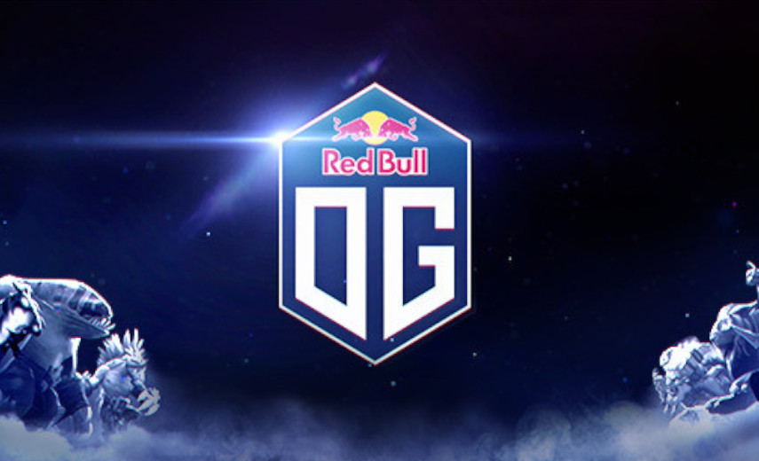
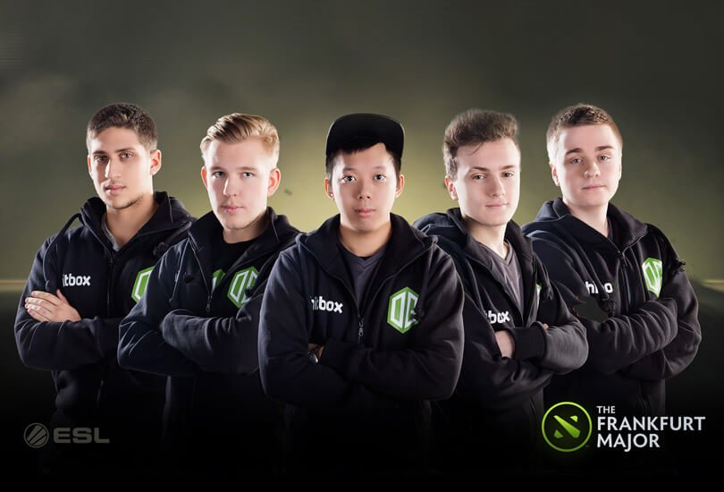
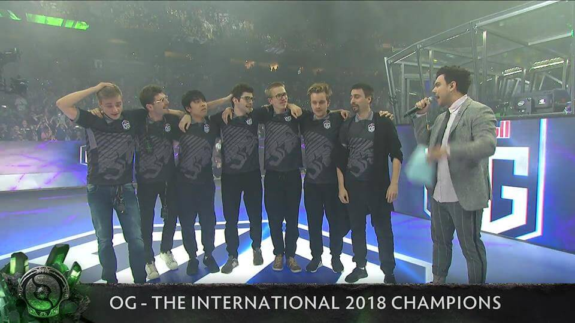
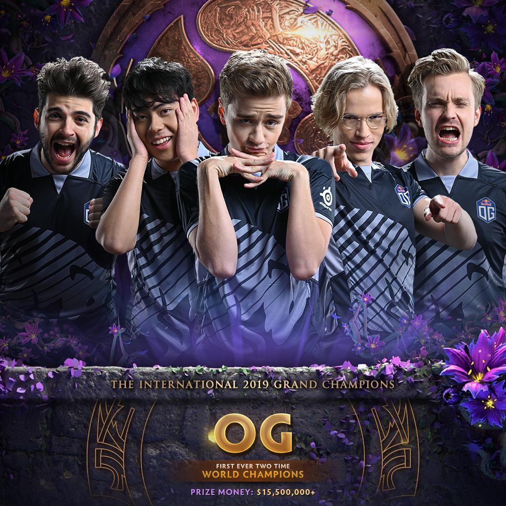
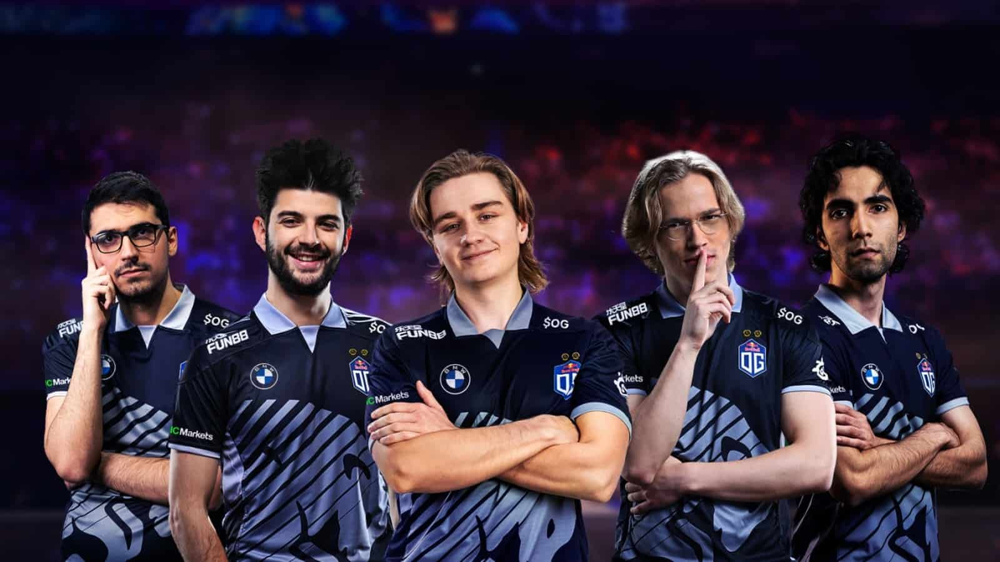

OG Esports
OG is a professional esports organisation based in Europe. Formed in 2015, they are best known for their Dota 2 team who won The International 2018 and 2019 tournaments. They also have teams representing other games, such as Counter-Strike: Global Offensive and Valorant.
Dota 2 division
Foundation and early success (2015–2017)
OG was founded as "(monkey) Business" [sic] by players Tal "Fly" Aizik and Johan "N0tail" Sundstein , who were former Team Secret players, along with David "MoonMeander" Tan, Amer "Miracle-" Al-Barkawi, and Andreas "Cr1t-" Nielsen in August 2015. Soon after a dominating run through the European qualifiers for the Frankfurt Major, they adopted the moniker OG. They went on to win the inaugural Dota 2 Major Championship in Frankfurt in November 2015, earning US$1 million in prize money.[2] Despite placing in the bottom half of the next Major in Shanghai in March 2016, the team would rebound and take first place at the Manila Major in June 2016, becoming the first team to repeat as champions of a Valve sponsored Dota 2 tournament.[3]
Go to OG Winning the Frankurt Major
OG Winning the Frankurt Major
OG entered The International 2016 as one of the favourites after earning a direct invite, but ended up finishing 9-12th out of 16 teams. In August 2016, MoonMeander, Miracle-, and Cr1t- left the team, with Gustav "s4" Magnusson, Anathan "ana" Pham, and Jesse "JerAx" Vainikka replacing them.[4][5] Despite the new roster, OG won the Boston Major in December 2016, giving them their third Dota 2 Major championship.[6] For the first premier tournament following Boston, OG advanced to the grand finals of the Dota 2 Asia Championships in Shanghai, where they were swept in a best-of-five series against Invictus Gaming.[7] Following that, OG won the Kiev Major in a best of five series against Virtus.pro.[8] At the Kiev event, the team made an appearance on Valve's True Sight documentary series.[9]
Go to The International Victories (2018-2019)
The International victories (2018–2019)
In May 2018, the organisation signed James "Swedish Delight" Liu to represent the professional Super Smash Bros. fighting game scene.[10][11] That same month, Fly and s4 left the team to join Evil Geniuses, with Roman "Resolut1on" Fominok joining VGJ.Storm. Due to post-deadline roster changes, OG would no longer be eligible to be directly invited to The International 2018 nor for the Regional Qualifiers and were required to play through the Open Qualifiers.[12][13] Needing three new members just a few weeks before the qualifiers began, OG quickly signed Topias "Topson" Taavitsainen, a newcomer to the scene who had never performed at a major LAN event prior to the event, Sébastien "Ceb" Debs, who had previously served as the team's coach, and ana, returning to the team from a year-long break after their previous elimination at The International 2017. [12][13][14][15] Finishing outside of the top eight in the Dota Pro Circuit final standings, which granted a direct invite to The International 2018, OG earned theirs by playing through and winning the European-region open qualifiers.
Following that, OG were then placed into group A of The International's group stage, finishing fourth with a record of 9-7, which seeded them into the upper bracket. There, OG won every series to advance to the grand finals.[16][17][18] Facing the lower bracket winner PSG.LGD in it, whom OG had just defeated in the upper bracket finals, OG won the game one, but lost the next two games.[17] Needing another win to avoid losing the series, OG forced a late-game comeback in game four, and subsequently won game five in a similar fashion, making them International champions and winning them over $11 million in prize money.[12][17][18] Their victory was considered a Cinderella and underdog success story, as they had come from the open qualifiers and had beaten some of the more favoured and accomplished teams along the way.[17][18] Their win also broke the historical trend of Chinese teams winning the International in even-numbered years.[13]
Go to OG Winning The International 8
OG Winning The International 8
In November 2018, ana left the team after deciding to take a break from the professional scene, with Per Anders "Pajkatt" Olsson Lille and Igor "iLTW" Filatov substituting for him until he returned in March 2019.[19][20][21][22] In April 2019, the team played against and lost to the OpenAI Five, a group of artificial intelligence bots that learned to play the game entirely through machine learning, in a live exhibition series in San Francisco.[23] Later that month, Titouan "Sockshka" Merloz replaced Cristian "ppasarel" Banaseanu as team coach. [24][25]
Go to OG Winning The International 9
OG Winning The International 9
The team earned a direct invite to The International 2019 by finishing in the top 12 of that season's Dota Pro Circuit.[26] There, they went 14-2 in the group stage, advancing through the upper bracket before defeating Team Liquid in the grand finals 3-1, making them the first ever repeat champion of an International, being awarded $15.6 million out of the $34 million prize pool.[27]
Go to Restructuring (2020-Present)
Restructuring (2020–Present)
The Dota 2 team went through various changes in January 2020, with ana leaving to take another extended hiatus until the next Dota Pro Circuit season,[28] JerAx announcing his retirement,[29] and Ceb leaving the active roster to help focus on developing other players on the team.[30] To replace them, the team signed Syed "Sumail" Hassan, Yeik "MidOne" Nai Zheng, and Martin "Saksa" Sazdov.[31][32] Sumail was released from the team in July 2020, with Ceb replacing him as a player.[33]
In March 2021, MidOne was removed from the roster, with ana briefly returning to the roster before announcing his retirement in June.[34][35] Shortly after, the team re-signed Sumail.[36] OG qualified to The International 2021 via regional qualifiers,[37] but were eliminated 2-0 in the lower bracket to the tournament's eventual champion Team Spirit.[38]
Roster
| Name | Country | Role | Game Name |
| Taavitsainen, Topias | Finland | Midlane | Topson |
| Hassan, Syed Sumail | Pakistan | Carry | Sumail |
| Sazdov, Martin | North Macedonia | Support | Saksa |
| Sundstein, Johan | Denmark | Support | N0tail |
| Debs, Sébastien | France | Offlane | Ceb |
| Mikhail "Misha" Agatov | Russia | Head Coach | Misha |
| Titouan "Sockshka" Merloz | France | Assistant Coach | Sockshka |
Counter-Strike: Global Offensive division
In December 2019, OG announced they had formed a Counter-Strike: Global Offensive team, with the organisation signing veterans Nathan "NBK-" Schmitt and Valdemar "valde" Bjørn Vangså, along with Aleksi "Aleksib" Virolainen, Issa "ISSAA" Murad and Mateusz "mantuu" Wilczewski.[39] Following that, the team signed Casper "ruggah" Due as the team coach in January. In September 2020, ruggah was implicated in the coaching bug scandal. As a result, the Esports Integrity Commission (ESIC) and Valve banned ruggah from participating in one Valve-sponsored Major Championship.[40][41] In February 2021, the team removed NBK- from the active roster, with ISSAA following suit shortly after.[42] To replace them, the team signed Nikolaj "niko" Kristensen in March 2021, and Shahar "flameZ" Shushan a month later.[43][44]
Roster
| Name | Country | Game Name |
| Lindström, Kevin | Sweden | Topson |
| Chevasson, Benjamin | France | uNKOE |
| MacGill, Harry | United Kingdom | DPS |
| Cherednichenko, Nikita | Russia | trexx |
| Linikas, Tomas | Lithuania | Destrians |